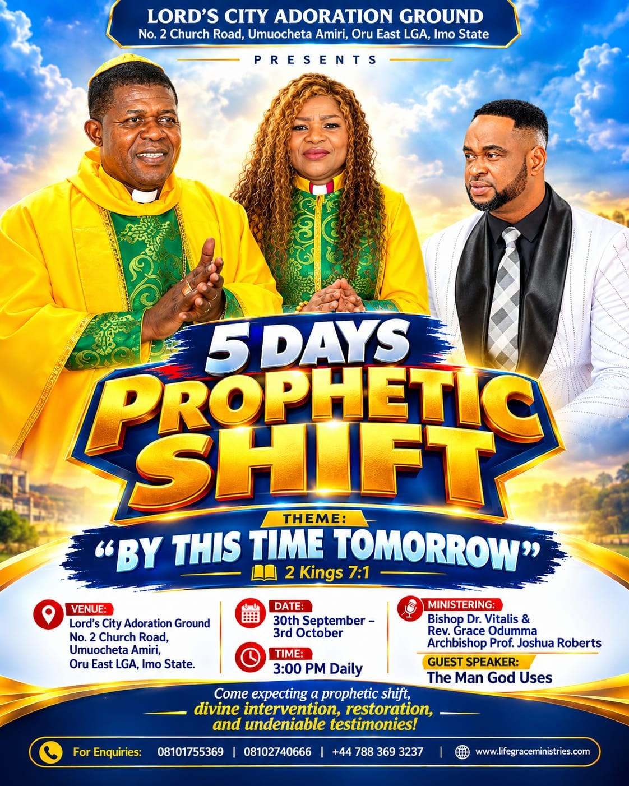
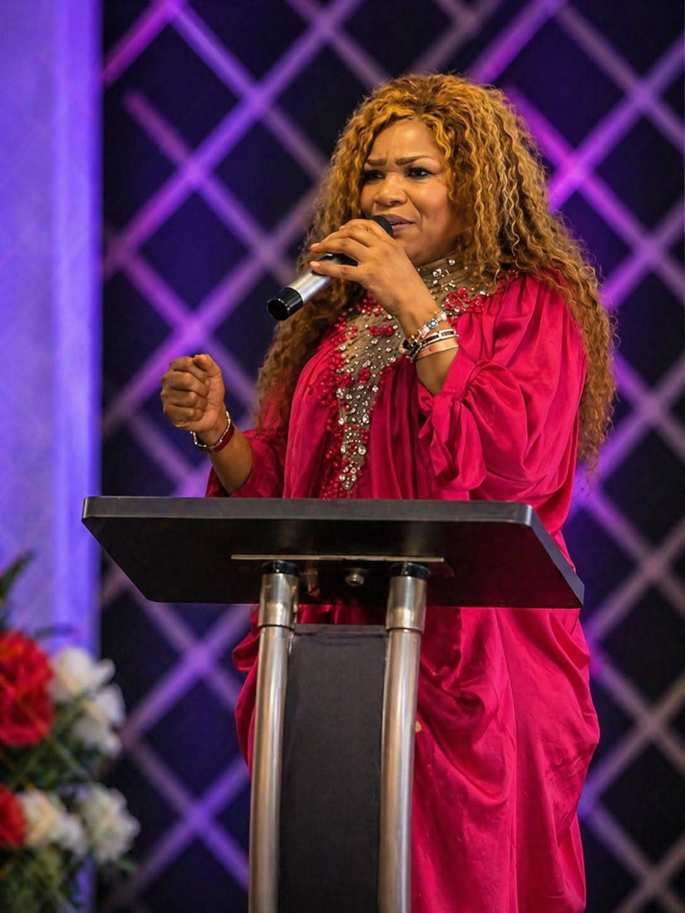

Founder & Spiritual Leader
Bishop Dr. Vitalis Odumma
Founder and spiritual leader of Life Grace Ministries International, dedicated to spreading the Gospel and helping people discover their purpose in Christ.
Read More →Life Grace Ministries International is dedicated to spreading the Gospel of Jesus Christ, transforming lives and building a strong community of believers through worship, prayer and service.
We welcome people of every age and background to grow together in faith, serve with compassion and build lasting relationships through the life of the church.

To share the Gospel of Jesus Christ, strengthen believers through prayer, worship and discipleship, and serve communities with love, compassion and faith.
To build a Christ-centred community where individuals and families grow in faith, experience God's love and discover their purpose.

Come expecting a prophetic shift, divine intervention, restoration, and undeniable testimonies!
For enquiries: 08101755369 | 08102740666 | +44 788 369 3237
Worship, fellowship and spiritual growth for every age.
Uplifting praise with our ministry worship team every service.
Interactive teaching and discussion rooted in God's word.
Dedicated prayer support for individuals and families.
Serving communities with compassion, faith and practical support.
A multipurpose community project complex in Amiri, Oru East LGA, Imo State — designed as a transformative hub for education, healthcare, skills development, commerce, hospitality and spiritual growth.
Dedicated servants of God leading with faith, vision and compassion.
Founder and spiritual leader of Life Grace Ministries International, dedicated to spreading the Gospel and helping people discover their purpose in Christ.
Read More →
Serves alongside the ministry through worship, prayer and compassionate service, empowering women, strengthening families and mentoring young people.
Read More →Confidential, compassionate, faith-based guidance for individuals, couples and families — with prayer support and spiritual growth at its heart.
Empowering young people through worship, fellowship, leadership development, outreach and discipleship.
Support the Lord's City development project or give directly to LifeGrace Ministries church ministry.